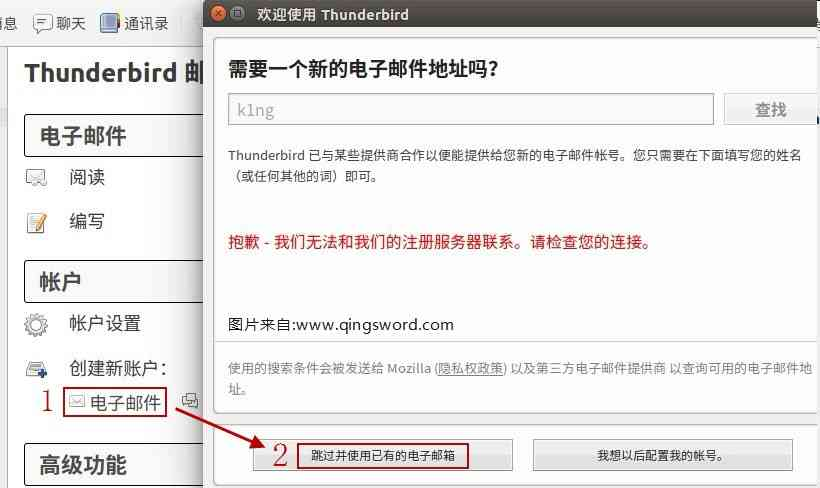
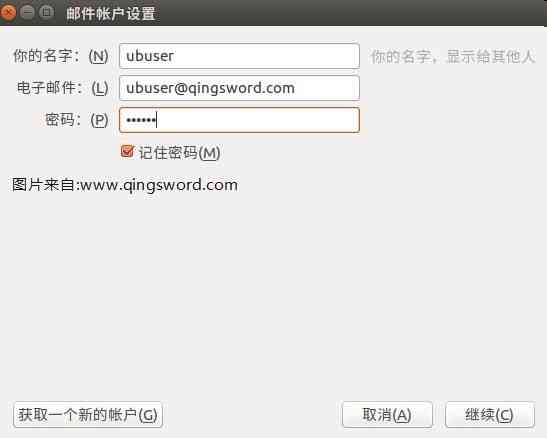
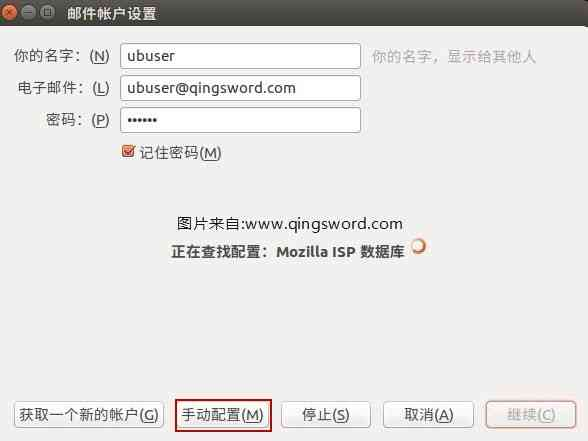
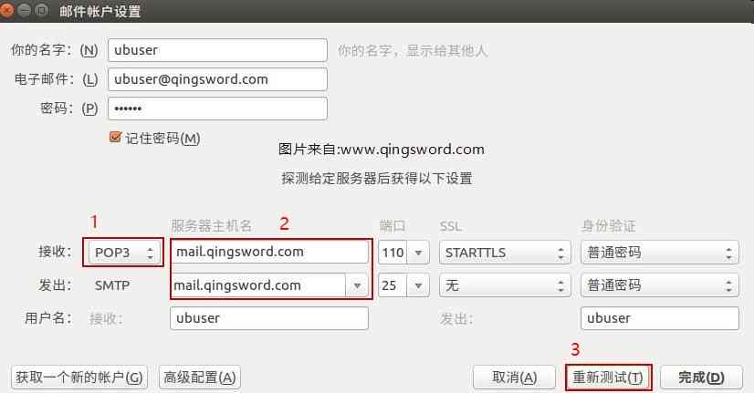
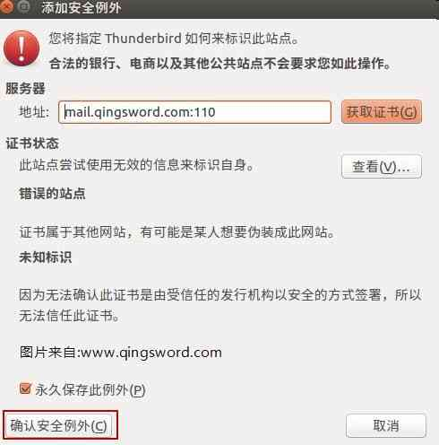
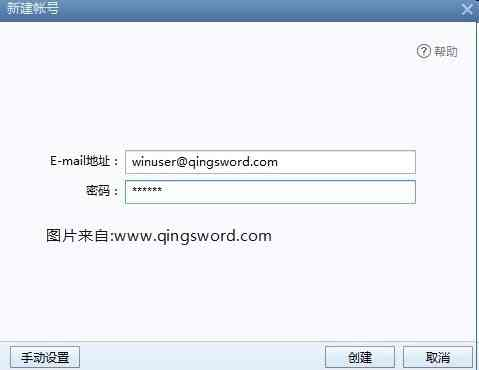
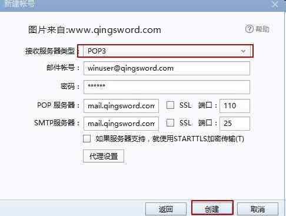
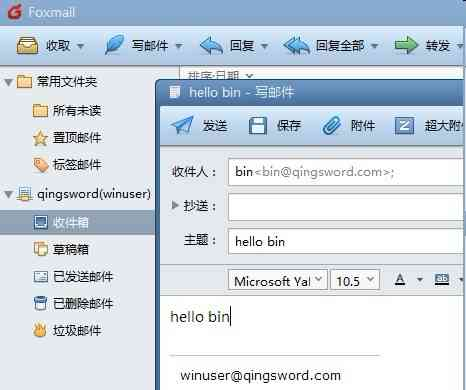

[RHEL]-23-使用Postfix与Dovecot部署电子邮局系统
引言
这篇文章介绍如何在RHEL系统环境中使用Postfix与Dovecot部署简单的电子邮局系统。
文章目录
0×1.电子邮局系统简介
最早的一封电子邮件是由麻省理工学院Ray Tomlinson博士在1971年发送的，从此开启了电子邮件的新纪元；电子邮局系统包括三种最基本的应用："邮件传输协议SMTP（TCP25）"、"第三版邮局协议POP3（TCP110）"、"第四版互联网信息访问协议IMAP4（TCP143）"。
SMTP协议用来发送或中转发出的邮件，POP3协议用来将邮件服务器上的邮件储存到本地，IMAP4协议用来在本地主机上访问邮件。
所以，为了部署一个简单的电子邮局系统需要在系统上安装提供上面三种功能的应用软件，本文所使用的软件如下：
Postfix：提供邮件发送服务，即SMTP；
Dovecot：提供邮件收取服务，即POP3；
ThunderBrid/Foxmail：客户端收发邮件的工具，即封装了IMAP4协议的应用程序（ThunderBrid是一款跨平台的本地邮件管理应用程序，能够工作在Linux与Windows桌面环境下）；
0×2.部署电子邮局系统实例
实验环境：
RHEL7，邮件服务器，外网IP 192.168.1.233/24，网关192.168.1.1（仅是为了方便使用yum去下载安装），内网IP 192.168.100.233/24（注意，内网这块网卡的配置不要配置网关，否则启动后，服务端将无法访问外网）；
Ubuntu，邮件客户端，IP 192.168.100.200/24，DNS服务器地址192.168.100.233；
Windows10，邮件客户端，IP192.168.100.23/24，DNS服务器地址192.168.100.233；
三台机器在同一个局域网中IP如上所示，在Ubuntu上安装了ThunderBird，在Windows10中安装了Foxmail；
为了不让iptables影响到服务器的邮件收发，首先将iptables关闭（或者添加允许对应端口和协议的收发条目）：
[root@qingsword.com ~]# systemctl stop iptables [root@qingsword.com ~]# systemctl disable iptables
a.配置邮件域名解析
首先安装bind服务：
[root@qingsword.com ~]# yum install -y bind-chroot
修改主配置与区域配置文件，添加邮件解析记录：
[root@qingsword.com ~]# vim /etc/named.conf
#options区域中两处any，修改后保存
options {
listen-on port 53 { any; };
..省略部分输出..
allow-query { any; };
#区域配置文件末尾添加正向域解析记录
[root@qingsword.com ~]# vim /etc/named.rfc1912.zones
zone "qingsword.com" IN {
type master;
file "qingsword.com.zone";
allow-update { none; };
};
#创建解析文件，添加邮件解析记录
[root@qingsword.com ~]# cp -a /var/named/named.localhost /var/named/qingsword.com.zone
[root@qingsword.com ~]# vim /var/named/qingsword.com.zone
$TTL 1D
@ IN SOA qingsword.com. admin.qingsword.com. (
0 ; serial
1D ; refresh
1H ; retry
1W ; expire
3H ) ; minimum
NS ns.qingsword.com.
ns IN A 192.168.100.233
@ IN MX 10 mail.qingsword.com.
mail IN A 192.168.100.233
#重启named服务，加入开机启动
[root@qingsword.com ~]# systemctl restart named
[root@qingsword.com ~]# systemctl enable named
b.Postfix安装与配置
下载postfix，修改主配置文件：
#在RHEL7中默认已经安装了这个软件 [root@qingsword.com ~]# yum install -y postfix #修改postfix的主配置前，先查看下本机的机器名，记下这个机器名，稍后需要写入到postfix的主配置文件中（如果发现是默认的localhost名称，可以使用vim修改这个文件，输入自定义的机器名） [root@qingsword.com ~]# cat /etc/hostname qingsword.com #修改postfix的主配置 [root@qingsword.com ~]# vim /etc/postfix/main.cf #查找并修改下面这几个配置（取消前面的#号） #myhostname修改成与/etc/hostname文件中相同，mydomain修改成与bind中正向域解析记录头部的域名相同（zone "qingsword.com" IN ） myhostname = qingsword.com mydomain = qingsword.com #设置成对内网监听的网卡IP，如果想监听所有网卡，可以设置成all inet_interfaces = 192.168.100.233 #可接收邮件的主机名和域名，就是我们上面设置的域名与主机名，这里使用变量更加方便，主机名或域名更改后，只需要更改上面一处即可 mydestination = $myhostname, $mydomain #重启postfix并设置成开机启动 [root@qingsword.com ~]# systemctl restart postfix [root@qingsword.com ~]# systemctl enable postfix
postfix配置完成。
c.Dovecot安装与配置
下载Dovecot，修改配置如下：
#下载安装 [root@qingsword.com ~]# yum install -y dovecot #修改主配置 [root@qingsword.com ~]# vim /etc/dovecot/dovecot.conf #取消protocols前面的注释符号 protocols = imap pop3 lmtp #在下面追加，使用明文验证 disable_plaintext_auth = no #再追加一行，仅允许内网用户登录服务器，如果想要允许全部网段的IP可以设置成0.0.0.0/0 login_trusted_networks = 192.168.100.0/24 #配置邮件储存路径 [root@qingsword.com ~]# vim /etc/dovecot/conf.d/10-mail.conf # mail_location = maildir:~/Maildir #取消中间这一条的注释 mail_location = mbox:~/mail:INBOX=/var/mail/%u # mail_location = mbox:/var/mail/%d/%1n/%n:INDEX=/var/indexes/%d/%1n/%n #重启dovecot服务，并设置成开机启动 [root@qingsword.com ~]# systemctl restart dovecot [root@qingsword.com ~]# systemctl enable dovecot
完成上面的配置后，需要在服务器上创建出用于登录邮件系统的用户，本例创建两个用户，一个给ubuntu系统使用，一个给windows系统使用：
#创建两个用户，密码都是123456 [root@qingsword.com ~]# useradd ubuser [root@qingsword.com ~]# echo "123456" | passwd --stdin ubuser [root@qingsword.com ~]# useradd winuser [root@qingsword.com ~]# echo "123456" | passwd --stdin winuser [root@qingsword.com ~]# su ubuser [ubuser@qingsword.com root]$ cd #必须在对应用户的家目录中创建出下面这个目录（这是官方的一个规定，否则无法收发邮件） [ubuser@qingsword.com ~]$ mkdir -p mail/.imap/INBOX [ubuser@qingsword.com ~]$ exit exit [root@qingsword.com ~]# su winuser [winuser@qingsword.com root]$ cd [winuser@qingsword.com ~]$ mkdir -p mail/.imap/INBOX [winuser@qingsword.com ~]$ exit
d.客户端连接测试
ubuntu默认安装了ThunderBird，打开后，如下设置：
输入服务端设置的用户名和密码，邮箱地址，点击继续；
点击"手动配置"；
接收选择"POP3"，服务器输入服务端的MX记录地址"mail.qingsword.com"，然后点击"重新测试"；
之后程序会弹出一个红色的窗口，提示连接只是简单的密码验证，不用理会，勾选复选框确定即可；
Windows下打开Foxmail（如果第一次打开，会直接让你创建一个邮箱账户，如果原来已经有账户，可以在右上角下拉菜单中找到账户管理，添加一个账户即可）：
收取选择POP3，然后创建；
0×3.设置用户别名邮箱
别名邮箱定义在/etc/aliases文件中，意思是给这个文件中左侧的用户发邮件时，全部转发给右侧的用户，文件信息如下：
[root@qingsword.com ~]# more /etc/aliases # General redirections for pseudo accounts. bin: root daemon: root adm: root lp: root sync: root .... #我们可以自定义一个转发用户 qingsword: root #然后使用下面的命令刷新aliases文件 [root@qingsword.com ~]# newaliases #这个qingsword完全可以是系统中不存在的一个用户，这样当给qingsword@qingsword.com发送邮件时，同样会转发给root用户
使用Windows尝试给bin发送一封邮件：
虽然服务器的bin用户是一个不允许登录系统的用户，但只要是在/etc/aliases列表左侧的转发用户（左侧的用户名可以是系统中并不存在的用户），那么就会转发给右侧对应的用户，本例这个邮件将会转发给root，验证如下：
#服务器上root使用mail查看邮件列表时，可以看到winuser发来的一封邮件，这个邮件的收件地址是bin，但却被root收到了，这就是"用户别名邮箱"的作用 [root@qingsword.com ~]# mail Heirloom Mail version 12.5 7/5/10. Type ? for help. "/var/spool/mail/root": 3 messages 1 new 1 ubuser Thu Dec 15 01:08 21/704 "11" 2 winuser@qingsword.co Thu Dec 15 01:46 45/1645 "hello bin"